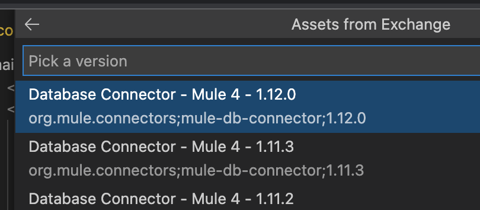
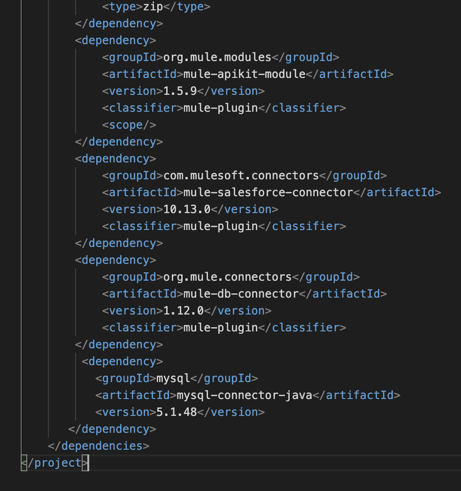

In this section we will cover implementing APIs with Anypoint Code Builder.
What you'll build
In this codelab, we will cover the implementation phase of the API life-cycle. Specifically, the topics will include
- Authentication to Anypoint Platform
- Creating an API Implementation from scratch
- Adding dependencies from Exchange
- Scaffolding an API
- Adding and configuring connectors to Salesforce and Database
- Develop a transformation through the power of DataWeave
- Running and debugging the application
- Deploying to Cloudhub
What you'll learn
The use-case for this section is around synchronizing contact details between a database and Salesforce.
For this purpose, we will create a Contact Synchronization API that will contain one flow to perform the following tasks:
- Fetch the contact in Salesforce containing the phone number to change/update, if it exists
- Validate the contact exists in Salesforce by using
first name+last name - If the contact already exists in Salesforce, then
- Update phone number in Salesforce
- Update phone number in Database - again if the contact exists, otherwise create it
- Return a response indicating success
- Otherwise: Create response indicating contact doesn't exist
The overall flow is shown below
What you'll need
For this codelabs, you will need:
- A working Anypoint Code Builder installation
- a Salesforce demo environment to fetch contacts
- A database where contact records are stored
Setting up Salesforce
To perform an upsert operation in Salesforce, an External ID is required on the target object. Follow this article to create it (for example ContactKey) if you don't already have one:
https://help.mulesoft.com/s/article/How-To-Upsert-With-Salesforce-Connector-With-Mule-4.
Create several contacts in Salesforce that can be used for testing. Make sure you set first name, last name, and the phone number.
Setting up the Database
In a database of your choice - we will be using MySQL, create a table Contacts with the following columns:
FirstNameLastNamePhoneNumber
If you are using MySQL, feel free to execute the SQL script below:
create-table.sql
CREATE TABLE `Contacts` ( `FirstName` VARCHAR(255) NOT NULL , `LastName` VARCHAR(255) NOT NULL , `PhoneNumber` BIGINT NOT NULL )Finally, you can either add records so they will be later updated by the flow or create them through the Mule application.
Introduction
In this section we will create a new API specification, which is covered in the Document Use-Case 1.
Requirements
To complete this section you will need:
- A working installation of Anypoint Code Builder
- An account in Anypoint Platform
Getting Started
In Anypoint Code Builder, create an API that takes as input "phone number", "first name", "last name" and returns "success" or "failure. You can create your own, or use the API below:
#%RAML 1.0
title: NewContactSync
mediaType:
- application/json
version: 1.0
protocols:
- http
- https
/updatePhone:
post:
queryParameters:
phoneNumber:
type: number
example: 5555555555
required: true
firstName:
type: string
example: Anna
required: true
lastName:
type: string
example: Woods
required: true
displayName: update
responses:
200:
body:
type: string
example: successCommit your changes and push them to Design Center. Feel free to test your API with the Mocking Service, and finally publish it to Anypoint Exchange.
That's it! You are now ready to move on to the next section.
Introduction
In this section we will create a new Mule application, which will contain the flow used to update the information in both backends, Salesforce and database.
Requirements
To complete this section you will need:
- A working installation of Anypoint Code Builder
Getting Started
Creating the Mule project
Open the Command palette (OSX: ⌘⇧+P, Win: Ctrl+Shift+P or F1) and search for Create a Project
Alternatively, expand the Projects section in the Explorer view and press Create a Project
This action will bring about a new wizard-type prompt. The first action requires you to select the type of project to create, in this case Mule Project Type:

The next prompt is on the Project Name, the runtime version (default) and the location where to store the project
Adding DataWeave dependencies
Add the following DataWeave dependencies to the pom.xml created during project creation
<dependencies>
<dependency>
<groupId>org.mule.weave</groupId>
<artifactId>runtime</artifactId>
<version>2.4.0</version>
<scope>provided</scope>
</dependency>
<dependency>
<groupId>org.mule.weave</groupId>
<artifactId>core-modules</artifactId>
<version>2.4.0</version>
<scope>provided</scope>
</dependency>
<dependency>
<groupId>org.mule.weave</groupId>
<artifactId>java-module</artifactId>
<version>2.4.0</version>
<scope>provided</scope>
</dependency>
</dependencies>Introduction
In this section we will import the API specification previously published in Walkthrough 3-1: Create the Contact Synchronization API in order to scaffold the flows required to implement the API.
Requirements
To complete this section you will need:
- A working installation of Anypoint Code Builder
- The API to scaffold published in Anypoint Exchange
Getting Started
Importing an asset from Anypoint Exchange
Search for Import Asset from Exchange in the Command palette (OSX: ⌘⇧+P, Win: Ctrl+Shift+P or F1)
And select Rest API to continue
Search for the API previously published in Walkthrough 3-1 by entering the name of the asset and and press Enter to start the search
Any existing assets that match your search criteria will be displayed next. Choose the right API to continue
At this point, Anypoint Code Builder will fetch and list the published versions of the selected API. Select the latest version to continue
When prompted to scaffold the API Dependency, select Yes

Anypoint Code Builder will then add the dependency to the pom.xml file and display a series of confirmations at the bottom right of the window:
This concludes this section. In the next ones, we will create a configuration file and add the connectors to our backend systems.
Introduction
One of the best practices when working with connectors is to reference configuration files, as these properties can then be changed when deploying to the various target environments. In this section we will learn how to create this configuration file.
Requirements
To complete this section you will need:
- A working installation of Anypoint Code Builder
Getting Started
Create a config.yaml file
In the left Explorer view, right-click the src/main/resources folder and select New > File. Next, set the file name to config.yaml and hit Enter. With the newly created file opened, add the properties for your Salesforce and MySQL connections, as follows:
salesforce:
username: "yourusername"
password: "yourpassword"
token: "yourtoken"
mysql:
host: "yourhost"
port: "yourport"
username: "yourdbusername"
password: "yourdbpassword"
database: "yourdatabase"Back in newcontactsync.xml file add the following using auto-complete, right before the http listener config:
<configuration-properties file="config.yaml" />
When triggering auto-complete, Anypoint Code Builder will show the following list
After selecting the configuration properties from the list above, the result should be similar to the image shown below
Congratulations on creating your configuration file! We will make use of it in the next sections.
Introduction
Now that we have our configuration file, we are ready to add the connectors for our backend systems. In this section we will learn how to use out-of-the-box connectors for our integration flows.
The following connectors are included with Anypoint Code Builder. If a connector is not in this list, you can always import it from Anypoint Exchange. The out-of-the-box connectors are:
- Email (1.4.2)
- HTTP (1.6.0)
- Sockets (1.2.2)
- API Kit (1.5.6)
- Salesforce (10.13.0)
- NetSuite (11.5.0)
- Slack (1.0.6)
Requirements
To complete this section you will need:
- A working installation of Anypoint Code Builder
Getting Started
Add the Salesforce connector
In the main editor window, with your Mule application file opened and using auto-complete add the Salesforce connector

Feel free to copy the snippet below if desired, but do note that you will need to add the corresponding namespace at the top of the XML file (check the note below). You can also change the connector name if desired
<salesforce:sfdc-config name="Salesforce_Config">
<salesforce:basic-connection username="${salesforce.username}" password="${salesforce.password}" securityToken="${salesforce.token}" />
</salesforce:sfdc-config>If you used the snippet, you will already have the basic authentication section included. If you have not, go ahead and set your Salesforce username, password and token based on the definition in config.yaml, as shown in the snippet above.
Anypoint Code Builder will issue a warning if the connector is not used anywhere - we will do this in the next section

This concludes setting up our Salesforce connector. Next is setting up the Database connector.
Introduction
In this section we will cover how to add the database connector to our Mule implementation.
Requirements
To complete this section you will need:
- A working installation of Anypoint Code Builder
Getting Started
Adding the database connector
The Database connector is imported from Anypoint Exchange. Below are the steps to import an asset into your project. Start by searching for Import Asset from Exchange in the Command palette (OSX: ⌘⇧+P, Win: Ctrl+Shift+P or F1) and select Connector
In the search prompt, enter "database" to find the right connector. When the search results are shown, select the Database Connector
After Anypoint Code Builder lists all the available versions for the chosen connector, select the latest version (note that the version may be different than the one shown in the screenshot below)

Now that the connector has been imported and the dependencies have been added to the pom.xml file, the next step is to add the required database driver dependencies. In this example, we are adding the MySQL driver dependencies (see https://docs.mulesoft.com/db-connector/1.10/database-connector-connection#configure-the-jdbc-driver for more details).
To add the driver dependencies, open the pom.xml file and add the following fragment inside the dependencies section
<dependency>
<groupId>mysql</groupId>
<artifactId>mysql-connector-java</artifactId>
<version>5.1.48</version>
</dependency>You should be left with a pom.xml file like the one shown below (the db connector version number may be different):

Remember that dependencies are also listed in the Explorer view, in the bottom left, under Project Dependencies
After adding the dependency, make it visible for the database connector by adding the shared libraries section in the mule maven plugin configuration (also found in the pom.xml file).
Replace the empty plugins section
<plugin>
<groupId>org.mule.tools.maven</groupId>
<artifactId>mule-maven-plugin</artifactId>
<version>${mule.maven.plugin.version}</version>
<extensions>true</extensions>
<configuration />
</plugin>With the shared library configuration:
<configuration>
<sharedLibraries>
<sharedLibrary>
<groupId>mysql</groupId>
<artifactId>mysql-connector-java</artifactId>
</sharedLibrary>
</sharedLibraries>
</configuration>For your reference, you can compare your version with the full pom.xml contents below:
<?xml version="1.0" encoding="UTF-8" standalone="no"?>
<project xmlns="http://maven.apache.org/POM/4.0.0"
xmlns:xsi="http://www.w3.org/2001/XMLSchema-instance"
xsi:schemaLocation="http://maven.apache.org/POM/4.0.0 http://maven.apache.org/maven-v4_0_0.xsd">
<modelVersion>4.0.0</modelVersion>
<groupId>com.mycompany</groupId>
<artifactId>contact-sync-sfdb</artifactId>
<version>1.0.0-SNAPSHOT</version>
<packaging>mule-application</packaging>
<name>ContactSyncSFDB</name>
<properties>
<project.build.sourceEncoding>UTF-8</project.build.sourceEncoding>
<project.reporting.outputEncoding>UTF-8</project.reporting.outputEncoding>
<mule.maven.plugin.version>3.3.5</mule.maven.plugin.version>
</properties>
<build>
<plugins>
<plugin>
<groupId>org.apache.maven.plugins</groupId>
<artifactId>maven-clean-plugin</artifactId>
<version>3.1.0</version>
</plugin>
<plugin>
<groupId>org.mule.tools.maven</groupId>
<artifactId>mule-maven-plugin</artifactId>
<version>${mule.maven.plugin.version}</version>
<extensions>true</extensions>
<configuration>
<sharedLibraries>
<sharedLibrary>
<groupId>mysql</groupId>
<artifactId>mysql-connector-java</artifactId>
</sharedLibrary>
</sharedLibraries>
</configuration>
</plugin>
</plugins>
</build>
<repositories>
<repository>
<id>anypoint-exchange-v2</id>
<name>Anypoint Exchange</name>
<url>https://maven.anypoint.mulesoft.com/api/v2/maven</url>
<layout>default</layout>
</repository>
<repository>
<id>mulesoft-releases</id>
<name>MuleSoft Releases Repository</name>
<url>https://repository.mulesoft.org/releases/</url>
<layout>default</layout>
</repository>
</repositories>
<pluginRepositories>
<pluginRepository>
<id>mulesoft-releases</id>
<name>mulesoft release repository</name>
<layout>default</layout>
<url>https://repository.mulesoft.org/releases/</url>
<snapshots>
<enabled>false</enabled>
</snapshots>
</pluginRepository>
</pluginRepositories>
<dependencies>
<dependency>
<groupId>org.mule.weave</groupId>
<artifactId>runtime</artifactId>
<version>2.4.0</version>
<scope>provided</scope>
</dependency>
<dependency>
<groupId>org.mule.weave</groupId>
<artifactId>core-modules</artifactId>
<version>2.4.0</version>
<scope>provided</scope>
</dependency>
<dependency>
<groupId>org.mule.weave</groupId>
<artifactId>java-module</artifactId>
<version>2.4.0</version>
<scope>provided</scope>
</dependency>
<dependency>
<groupId>30e1d780-2386-45a2-89af-74ebdc811743</groupId>
<artifactId>newcontactsync</artifactId>
<version>1.0.0</version>
<classifier>raml</classifier>
<type>zip</type>
</dependency>
<dependency>
<groupId>org.mule.modules</groupId>
<artifactId>mule-apikit-module</artifactId>
<version>1.5.6</version>
<classifier>mule-plugin</classifier>
<scope />
</dependency>
<dependency>
<groupId>com.mulesoft.connectors</groupId>
<artifactId>mule-salesforce-connector</artifactId>
<version>10.13.0</version>
<classifier>mule-plugin</classifier>
</dependency>
<dependency>
<groupId>org.mule.connectors</groupId>
<artifactId>mule-db-connector</artifactId>
<version>1.12.0</version>
<classifier>mule-plugin</classifier>
</dependency>
<dependency>
<groupId>mysql</groupId>
<artifactId>mysql-connector-java</artifactId>
<version>5.1.48</version>
</dependency>
</dependencies>
</project>Now add the database configuration using the values from your config.yaml file to the newcontactsync.xml file. In order to make this easier and faster, use the auto-complete feature or copy the snippet db:mysql-config below
MySQL configuration snippet
<db:config name="Database_Config">
<db:my-sql-connection host="${mysql.host}" port="${mysql.port}" user="${mysql.username}" password="${mysql.password}" database="${mysql.database}" />
</db:config>Manually add the following namespace:
xmlns:db="http://www.mulesoft.org/schema/mule/db"
Troubleshooting SSL connectivity
At this point, you can build your Mule application and test it. When running the application you may end up facing a database connection error related to SSL:
Error type : DB:CONNECTIVITY
If so, adding the following properties to the database configuration will help. Add the following snippet inside your connection configuration:
<db:connection-properties>
<db:connection-property key="useSSL" value="false" />
</db:connection-properties>So that the complete configuration looks like this:
<db:config name="Database_config">
<db:my-sql-connection host="${database.host}" port="${database.port}" user="${database.username}" password="${database.password}" database="${database.database}">
<db:connection-properties>
<db:connection-property key="useSSL" value="false" />
</db:connection-properties>
</db:my-sql-connection>
</db:config>We are still investigating why this is necessary.
Introduction
Our use-case includes finding records in Salesforce. For this to happen, and armed with our Salesforce connector already configured in previous sections, we can now proceed to add a Query processor.
Requirements
To complete this section you will need:
- A working installation of Anypoint Code Builder
- A set of records in Salesforce to try the query
Getting Started
The steps that we are following can be summarized as follows:
- Building the search criteria to be used in the Salesforce query using a Transform processor
- Adding a Salesforce:Query processor to execute the query, saving the results in a variable
- Adding logic when the record is found in Salesforce using a Choice processor
Building the search criteria
As you might recall, the way to find the record in Salesforce is by using a SOQL query like so:
SELECT phone, ContactKey__c from Contact WHERE FirstName=':firstname' AND LastName=':lastname'The query above uses two query parameters, which we need to be passed: firstname and lastname. To assign values to these, we will create two variables in our flow: firstnameVar and lastnameVar, which we can do by adding a Transform processor.
First, we need to locate the following Logger processor:
<flow name="post:\updatePhone:newcontactsync-config">
<logger level="INFO" message="post:\updatePhone:newcontactsync-config" />
</flow>Either before or after - in our case before - the Logger processor, use auto-complete to add a transform with output JSON processor:
This processor allows to perform several DataWeave mappings in parallel. We need 4 mappings:
- The first name of the incoming payload, mapped to the
firstnameVarvariable - The last name of the incoming payload, mapped to the
lastnameVarvariable - The phone number of the incoming payload, mapped to the
phonenumberVarvariable
Use the snippet "transform with output JSON"
doc:name="DisplayName" doc:id="uniqueId" >
>
> 2.0
output application/json
---
{
firstName : "John",
lastName : "Doe",
}]]>
To create the 3 mappings mentioned above, add the following XML snippet to the Transform processor:
<ee:transform>
<ee:variables>
<ee:set-variable variableName="firstnameVar">
<![CDATA[%dw 2.0 output application/java --- attributes.queryParams.firstName]]>
</ee:set-variable>
<ee:set-variable variableName="lastnameVar">
<![CDATA[%dw 2.0 output application/java --- attributes.queryParams.lastName]]>
</ee:set-variable>
<ee:set-variable variableName="phonenumberVar">
<![CDATA[%dw 2.0 output application/java --- attributes.queryParams.phoneNumber]]>
</ee:set-variable>
</ee:variables>
</ee:transform>Querying Salesforce
It is now time to Query the Salesforce backend to find the record, if it exists. As before, you can use auto-complete to add a new Salesforce:Query processor, as shown in the steps below.
First, add a salesforce:query processor, which will result in the following fragment:
As we have already defined a configuration in a previous walkthrough, we can now reference it. Update the connection name to the one previously defined
Inside the empty salesforce:salesforce-query add the query to search for a contact's phone number and your unique key, e.g. ContactKey__c, using the firstnameVar and lastnameVar variables:
<salesforce:query config-ref="Salesforce_Config">
<salesforce:salesforce-query>
<![CDATA[SELECT phone, ContactKey__c from Contact WHERE FirstName=':firstname' AND LastName=':lastname']]>
</salesforce:salesforce-query>
<salesforce:parameters>
<![CDATA[#[output application/java
---
{
firstname : vars.firstnameVar,
lastname : vars.lastnameVar
}]]]>
</salesforce:parameters>
</salesforce:query>You can test your application now, if you want to - just note that you will have to set a return value as the payload. Later in the application we will set values to a variable named ReturnMessage depending on the various outcomes.
For the time being, we will use a temporary value: set a temporary value to the ReturnMessage variable:
<set-variable value='#["Intermediate testing. "]' variableName="ReturnMessage" />Add a transform at the end of the flow to return your temporary message (keep this at the end as you continue working through your use case):
<ee:transform>
<ee:message>
<ee:set-payload>
<![CDATA[%dw 2.0 output application/json --- vars.ReturnMessage]]>
</ee:set-payload>
</ee:message>
</ee:transform>You can optionally add a logger as well, to print the value of the variable in the console:
<logger level="INFO" message='#[vars.ReturnMessage]'/>
To test your application follow the steps in Walkthrough 3-9: Debug the Mule Application.
Adding logic
It's time to add some logic to our flow, in this case, by configuring a Choice processor. The branch chosen will depend on the conditions specified in the processor; in this case, we want to have 2 routes, based on whether a record exists in Salesforce or not.
Start by adding a choice checking if the contact already exists in salesforce. Feel free to use the snippet below for the Choice
If you are using auto-complete, Anypoint Code Builder will paste a template for the Choice processor, adding one route that requires an expression (DataWeave expression) and a default route, followed if none of the other options are applicable.
As a condition for the first branch, we need to check the results of the Salesforce query. If there are any results, the Salesforce:Query processor will return an array of Contact objects.
In our case, if the contact doesn't exist we return a failure message - so let's add that condition in the expression attribute:
<choice>
<when expression="#[payload.Phone[0] != null]"></when>
<otherwise></otherwise>
</choice>Complete the otherwise branch first as it is shorter than the when branch by
- Adding a Logger with the message "Contact does not exist in Salesforce"
- Use a Set Variable processor to assign the message "Failure: Contact does not exist in Salesforce" to the variable
ReturnMessage
The final otherwise construct should be similar to this:
<otherwise>
<logger level="INFO" message='#["Contact does not exist in Salesforce"]' />
<set-variable value='#["Failure: Contact does not exist in Salesforce"]' variableName="ReturnMessage" />
</otherwise>Let's work on the first branch, the one with the expression. Inside this branch,
- Add a
Set Variableprocessor to assign the value of the contact's "Phone" to a temporary variable namedphonenumberSFVar - Add a second
Set Variableprocessor to store the unique key, e.g. "ContactKey__c" to a temporary variable namedIdVar - Add a
Loggerto print the value of the phone found in the record - Finally, use a
Set Variableto assign a temporary value to theReturnMessagevariable
The result of these steps should be similar to
<set-variable value="#[payload.Phone[0]]" variableName="phonenumberSFVar"/>
<set-variable value="#[payload.ContactKey__c[0]]" variableName="IdVar"/>
<logger level="INFO" message='#["Existing phone number in salesforce: " ++ vars.phonenumberSFVar]'/>
<set-variable value='#["Contact exists in Salesforce"]' variableName="ReturnMessage"/>Test your application following the steps in Walkthrough 3-9: Debug the Mule Application, using an existing phone number and then a new phone number.
Congratulations, you've reached the end of this section. In the next one, we will add the following:
- Update Salesforce if the phone number differs from the one that is stored
- Update the database record if it exists, otherwise create a record
Introduction
Now that we have retrieved the contact record from Salesforce, we can add logic to determine if the record needs to be updated. If it does, we need to update the stored information with the new values. In this section, we will learn how to execute requests in parallel, using a Scatter-Gather processor.
The section is split in the following subsections:
- Adding and configuring a Scatter-Gather processor (this one)
- Updating the Contact record in Salesforce
- Upserting a record in the Database
Requirements
To complete this section you will need:
- A set of records in Salesforce to update
- A set of records in the target database to update (records will be created if they don't exist)
Getting Started
In the branch in which the Salesforce contact exists, we will update the phone number in both Salesforce and database.
Start by adding a Scatter-Gather processor with 2 routes - we will implement these afterwards following this logic:
- If the new phone number is different from the one that exists in Salesforce, updated it
- Check if the contact exists in the database and
- If it does not exist, create it
- If it exists, then upsert the phone number if needed
You can use auto-complete to add the processor or copy the snippet below
<scatter-gather>
<route></route>
<route></route>
</scatter-gather>Introduction
In this subsection we will implement the steps to update a record in Salesforce if it is needed. For this purpose, we will be adding 1) a logic to decide if the update is needed and 2) the operations required for this purpose, using the Salesforce connector.
Getting Started
We need to check first if the record needs to be updated. In previous sections, we stored the phone number retrieved from the record in a variable named phonenumberSFVar. We will now compare that variable to the value received in our request payload, stored in another variable named phonenumberVar.
For this purpose, we will first add a Choice processor, with a DataWeave expression to check if the existing and new phone numbers in Salesforce are the same. If they are the same,
- Add a Logger with the message "Phone number in Salesforce already up to date", and
- Add a Set Variable to set the value "Phone number in Salesforce already up to date. " to variable
ReturnMessageSF
In both routes of the Scatter-Gather we will use two return messages: one for Salesforce - named ReturnMessageSF, the other for the database, and will concatenate both afterwards to return a more comprehensive message back to the caller.
<choice>
<when expression="#[vars.phonenumberSFVar == vars.phonenumberVar]">
<logger level="INFO" message='#["Phone number in Salesforce already up to date"]' />
<set-variable value='#["Phone number in Salesforce already up to date. "]' variableName="ReturnMessageSF" />
</when>Next, in the otherwise branch, upsert the phone number using the variable IdVar and ContactKey__c. Log the successful update with a Logger and assign the value "Phone number in Salesforce successfully updated. " to variable ReturnMessageSF, as shown below:
<otherwise>
<ee:transform>
<ee:message>
<ee:set-payload>
<![CDATA[%dw 2.0
output application/java
---
[{
Id: payload.Id[0],
ContactKey__c: vars.IdVar,
Phone: vars.phonenumberVar
}]]]>
</ee:set-payload>
</ee:message>
</ee:transform>
<salesforce:upsert objectType="Contact" externalIdFieldName="ContactKey__c" config-ref="Salesforce_Config" />
<logger level="INFO" message='#["Phone number in Salesforce successfully updated"]' />
<set-variable value='#["Phone number in Salesforce successfully updated. "]' variableName="ReturnMessageSF" />
</otherwise>Remember to use the dw snippet for your transform:
doc:name="DisplayName" doc:id="uniqueId" >
>
>
output application/json
---
{
firstName : "John",
lastName : "Doe",
}]]>
Introduction
In this subsection we will implement the steps to insert or update a record in our target database. For this purpose, we will be adding 1) a logic to decide if an insert or an update is required and 2) the operations required for this purpose, using the Database connector.
Getting Started
In the second route of the Scatter-Gather, add a Database:Query processor with the purpose of selecting all the fields from the "Contacts" table and filtering by our the contact's first and last name:
<db:select config-ref="Database_Config">
<db:sql>
<![CDATA[SELECT * FROM Contacts WHERE FirstName = :firstname AND LastName = :lastname]]>
</db:sql>
<db:input-parameters>
<![CDATA[#[{
firstname: vars.firstnameVar,
lastname: vars.lastnameVar
}]]]>
</db:input-parameters>
</db:select>After our query has been executed, we need to add logic to decide whether we want to insert a record or update an existing one. Add a Choice to check if the contact exists in the database:
<choice>
<when expression="#[payload.phoneNumber[0] == null]"></when>
<otherwise></otherwise>
</choice>Inserting a row in the database
In the when branch, because the contact does not yet exist in the database table, insert a row with the contact details and set the "ReturnMessageDB" accordingly. The sequence is:
- A
db:insertprocessor to insert the row in the database - A Logger to output a message in the console that the record has been created
- Setting the variable
ReturnMessageDBwith a result message to be concatenated later with the results of the Salesforce operation
<db:insert config-ref="Database_Config">
<db:sql>
<![CDATA[INSERT INTO Contacts (FirstName, LastName, PhoneNumber) VALUES (:firstname, :lastname, :phone)]]>
</db:sql>
<db:input-parameters>
<![CDATA[#[{
firstname: vars.firstnameVar,
lastname: vars.lastnameVar,
phone: vars.phonenumberVar
}]]]>
</db:input-parameters>
</db:insert><logger level="INFO" message='#["Contact in database created"]' /><set-variable value='#["Contact in database created. "]' variableName="ReturnMessageDB" />Updating a row in the database
We will now add the steps to update a record. In the otherwise branch, extract the phone number and assign it to a variable named phonenumberDBVar, casting the contact phone number as String:
<set-variable value="#[payload.phoneNumber[0] as String]" variableName="phonenumberDBVar" />Then add a second Choice to check if the old and the new phone number are the same. We are doing this just to inform the caller accordingly. If the numbers are the same, log and update the ReturnMessageDB accordingly, otherwise update the phone number in the database, log and update the ReturnVariableDB
<choice>
<when expression="#[vars.phonenumberDBVar == vars.phonenumberVar]">
<logger level="INFO" message='#["Phone number in Database already up to date"]' />
<set-variable value='#["Phone number in Database already up to date. "]' variableName="ReturnMessageDB" />
</when>
<otherwise>
<db:update config-ref="Database_config">
<db:sql>
<![CDATA[UPDATE Contacts SET PhoneNumber = :Phone WHERE FirstName = :firstname AND LastName = :lastname]]>
</db:sql>
<db:input-parameters>
<![CDATA[#[{
firstname: vars.firstnameVar,
lastname: vars.lastnameVar,
Phone: vars.phonenumberVar
}]]]>
</db:input-parameters>
</db:update>
<logger level="INFO" message='#["Phone number in Database successfully updated"]' />
<set-variable value='#["Phone number in Database successfully updated. "]' variableName="ReturnMessageDB" />
</otherwise>
</choice>As we want to inform the caller with the appropriate message, we will now update our result variable - named ReturnMessage - and concatenate the values from ReturnMessageSF and ReturnMessageDB, as follows:
<set-variable value='#["Succes: " ++ vars.ReturnMessageSF ++ vars.ReturnMessageDB]' variableName="ReturnMessage" />Congratulations on completing this section! We are now ready to move on to debugging our application, if you have not done that before.
Introduction
In this section we will use the Anypoint Code Builder debugger to test and analyze our implemented flow. If you haven't used the debugger before, feel free to go through the Debugging codelab before running this one.
Please refer to Appendix B: Debug a Mule Application for an overview of debugging in Anypoint Code Builder before starting this section.
Requirements
To complete this section you will need:
- Existing records in Salesforce and the database for testing
- The completed application flow built in the previous sections
Getting Started
Starting the Mule application debugger
Let's start by setting a breakpoint in the first set-variable processor, and start the debugger by going to the Run and Debug menu on the left of the workspace. You can also open the debugger view by pressing ⇧⌘D in OSX.
You can see the full list of breakpoints in the Breakpoints panel in the Run and Debug view, at the bottom:
With your breakpoints set, click on the green Play button with the option Debug Mule Application selected. This action will start the Mule runtime.

If you would like to see the output of the Mule runtime, you can switch to the Output View (you can find this view in the command palette as well) and choose Terminal.
If the project has been successfully compiled and ready to use, you will see the following in your terminal:
Sending a request
Send a POST request with the tool of your choice to
http://localhost:8081/api/updatePhone?phoneNumber=1511161515&firstName=Pink&lastName=Panther
Your URL may look different depending on how you designed your API and the contacts entered in Salesforce. Once the Mule runtime starts executing the flow, Anypoint Code Builder will stop at the first breakpoint:
Using the debugger controls
From this point onwards, you can use the debugger controls shown at the top of the window. Step over a few times and check Variables and payload
Note how the variables change every time you step forward. This information can be found in the Run and Debug view, under the Variables panel.
Once you reach the Scatter-Gather processor you will see two debug threads under Call Stack. These correspond to the parallel routes running in parallel. You can switch between the threads.
In the Output View, note the log messages issues by the runtime whilst the flow is being executed
Step through to the end of the flow and check the return status code and message for the invocation. Try different variations with the input payload to test the various possibilities, add watches, add conditional breakpoints and make yourself familiar with the debugger functionality.
Congratulations on completing your first flow in Anypoint Code Builder! As a summary, in this Use Case we have learned how to:
- Use an out-of-the-box connector, like Salesforce
- Add a new connector dependency from Anypoint Exchange
- Use the various connector operations to fetch and update records in Salesforce and in a database
- How to debug your application using the integrated debugger